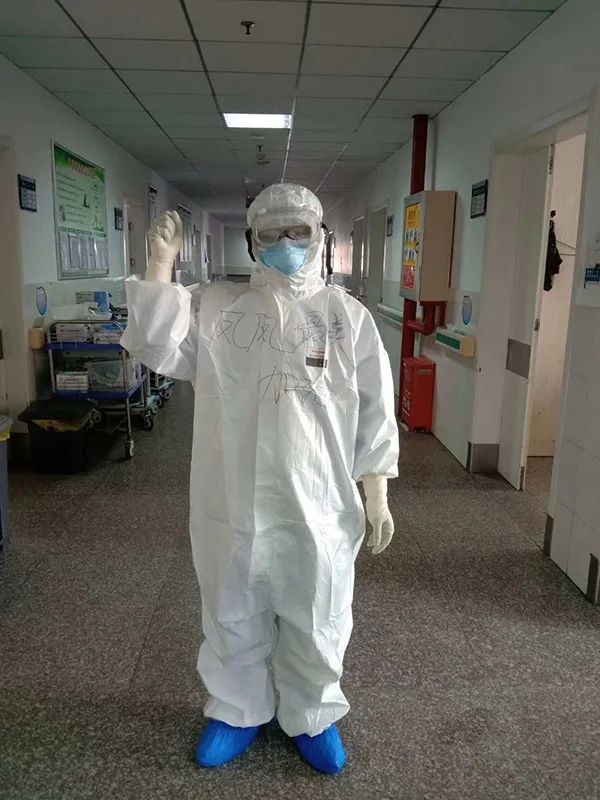
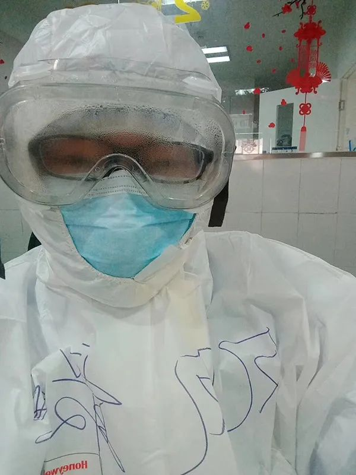
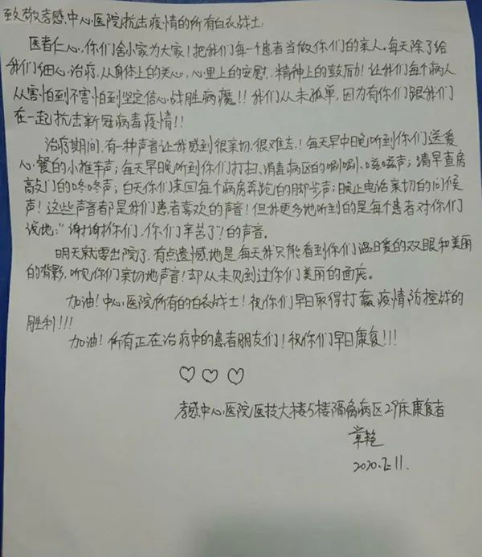
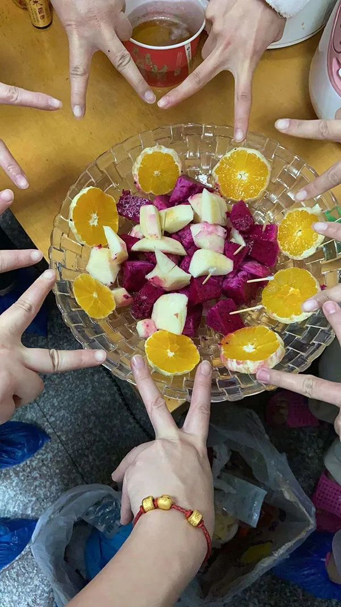

在人间丨我在武汉协和西院的30天
原文链接 备份链接 凤凰新闻客户端 凤凰网在人间工作室出品 我是北京日报摄影记者和冠欣，1月27日，我跟随援鄂北京医疗队来到了武汉，走上了抗击新冠肺炎的战场。昨天，2月25日，是我到武汉的第30天。 援鄂北京医疗队来到武汉后，在武汉协和 …
澎湃新闻记者 邓雅菲 实习生 陈紫嘉
32岁的陈凤是湖北省孝感市中心医院儿科的一名护士。2月5日，她与家中1岁的儿子道别，在该院隔离四病区开始了为期14天的“战疫”工作。
“如若是在平时，目前隔离病房的工作根本算不上累，可是当穿上防护服、戴上护目镜和防护口罩后，哪怕是很简单的生命体征的测量都变得困难起来。由于护目镜起雾打针难，我还遇到了给患者打了好几次针都打不进去的情况。”
陈凤告诉澎湃新闻，面对这些情况，患者不但没有埋怨，还鼓励她说，“你们技术还是不错的，也挺不容易的。”
陈凤坦言，那一刻她特别感动，“患者没有因为我们一针没有打好就埋怨、否定我们，而是给了我们理解、包容和鼓励，其实我们比谁都更希望能‘一针见血’。”
“抗疫期间，融洽的医患关系让我们深感欣慰。”在陈凤的描述中，医患之间高度协调、互相配合、井然有序。大敌当前，医患双方携手共进退：医者全力救治，患者全心信任。
在这个特殊时期，医患之间的尊重与关爱是这场可怕的疫情中令人感到温暖的“闪光点”。

陈凤身穿写着“凤凤最美，加油”字样的防护服。
陈凤的口述
超市员工破例为我开门
2月4日下午，我正在陪1岁的儿子时，接到医院通知说第二天要到隔离病房工作，我立刻轻手轻脚起床，出门去超市买生活用品。我步行来到离家最近的超市，可是超市却刚关了门，几个工作人员正准备离开，让我明天再来。
“怎么办，我明天就要去隔离病房工作了！”我很着急地对他们说。工作人员得知我要买成人纸尿裤等生活用品，对我说：“那我帮你开门，你进去买吧，不知道东西在什么地方就问我。”当时我特别感动，在还没有进隔离病房前就感受到了大家的支持。
2月5日，我来到孝感市中心医院隔离四病区，护士长给我们讲了工作中的要求及注意事项后，我们就分头工作了。一部分由提前来到病区熟悉工作环境的同事带到病房工作，另一部分负责整理生活区的环境。
我们主要的工作是给患者实施治疗护理，因为没有卫生员，我们还要兼顾病区及生活区的卫生及消毒工作。
来隔离病房之前，护士长曾跟我们说，“我们去隔离病房第一天就要有人来上夜班，谁愿意去就和我说。”我便主动报名了，被安排和我科的艾老师一起上夜班。我们都是第一次来到隔离区，对隔离病房的工作环境一无所知，心中难免有些担忧，但幸好一切工作都比较顺利。
衣服口罩湿透，因害怕感染情绪差点崩溃
隔离病房的工作如若是在平时，根本算不上累，可是当穿上防护服、戴上护目镜和防护口罩后，哪怕是很简单的生命体征的测量都变得困难起来。
2月7日，是我最难受的一天，上午的治疗比较多，工作不到一个小时，我就感觉到呼吸困难，呼吸完全依赖张口去呼吸，护目镜也一片雾水，根本看不清楚，都在凭借经验做事。
发静脉用药时，我们都是让患者自己看是不是他的床号和姓名来确认，由于看不清楚，我把6床的药拿错了3次，最后6床患者说，“你的眼镜都糊了，我来帮你找药吧。”我这才把药准确的给她挂好。

陈凤佩戴的护目镜一片雾水。
当天，6个小时的工作举步维艰，工作时间大概过了一半，我感觉头痛、喘息明显，就和高原反应一样，开始烦躁、不舒服。我尽可能地调整呼吸、保持平静，幸好有同事的协作和患者的理解才顺利完成工作。
下班脱防护服时，里面的衣服已经湿透了，让我害怕的是，我里层的口罩也湿透了，而湿口罩是没有防护作用的，我带着担忧赶紧去洗澡。
回到休息室，头痛明显，虽然很饿，但完全没有胃口吃饭，直接就躺上床休息了。我躺在床上，想到自己里层口罩湿透，想到自己会不会被感染，想到自己的家人，想到可爱的儿子，情绪一下崩溃了，没忍住哭了起来……
同事们赶紧来安慰我，鼓励我说，大家的防护措施已经很严格了，不要太担心，一定会战胜疫情的，我的情绪才平静了许多。
护目镜起雾打针困难，患者仍理解体谅我们
我们这一组护理人员大部分是从儿科来的，平日里进行静脉穿刺如果一针没穿刺好，压力会很大。
一些患儿家属心疼患儿，就会用言语给我们更大的压力。可是在这里，这些患者都能体谅我们戴着满是雾水的护目镜难以看清，哪怕是两次、三次没穿刺成功，都不会指责我们，还说，“我血管细，你们眼镜都糊了，是不好打”。
2月7号上午，给37床患者打针，我打了一针没打好，同事打了三针也没打好，明显感觉他有点疼，可是他一声都没有责备我们。我们自己都不好意思了，说让他休息一下，等会再打。
等我们把病房所有针都打上了，我再次来到37床，给他打上了针，他对我说：“你们技术还是不错的，也挺不容易的。”
那一刻我特别感动，患者没有因为我们一针没有打好就埋怨我们、否定我们，而是给了我们理解、包容和鼓励，其实我们比谁都更希望能“一针见血”。
康复患者出院感谢医护人员。(00:09)
隔离病区里的患者都能理解我们，还总说我们护士不容易，我们也尽可能地给患者最大的关怀。
记得8床的老爷爷是病区里面病情最重的患者，家里的子女都被感染了在住院。老爷爷身体难受吃不下饭，想喝粥，我们给护士长反应了情况，护士长就和食堂沟通，之后的几天食堂送饭就会另外送一份粥来。
后来有一天，老爷爷拿了几十块钱出来给我们说：“护士，我也知道你们辛苦，不想麻烦你们，可是我想吃牛肉味的泡面，能不能帮我买下，我给钱给你们。”当班同事让老爷爷拿着钱回病房休息，立即和外面的同事联系说，8床老爷爷想吃牛肉味的泡面，并让下一班护士带到病房。
从2月5日初进隔离病房到19日撤出休整，这期间陆续有病人康复出院，他们临走时会和我们道谢，还有人写感谢信给我们，我们也替为他们的康复感到高兴。

病人写给护士们的感谢信。
感恩同事与家人的支持
在隔离病房工作的这14天，我们有害怕，有焦虑，有欢笑，也有感动。同事之间无论是在生活上还是工作上都相互帮助，我们休息时，会为即将下班的同事准备吃的，也会一起在有限的空间里进行锻炼。
从2月5日进隔离病房到现在在酒店隔离，这期间我都不能回家。家里老人不在身边，全靠我老公在家带孩子。他不怎么会做饭，所以我在家里提前准备了一些零食水果和很多简单的食材给他，也备好了孩子吃的食物。
其实我最担心的还是孩子，他不到一岁半，是最调皮的时候。果不其然，我走后不到一个星期，儿子额头摔青了，看到他摔伤的照片，我很心疼，但更多的是害怕。
我再三嘱咐老公，一定要注意家里的一切危险因素。最后还是不放心，把处理意外和自救方法的相关知识都发给了他去学习。
很庆幸在这段一线抗疫的日子里，有同事们能一起互相帮助、互相鼓励，分享每一天的感动和害怕，也特别感谢老公照顾家庭，支持我的工作，做我坚强的后盾。

护士们为即将下班的同事准备水果。
在酒店休整7到14天后，我们就又将重新穿上防护服、戴上护目镜回到医院的隔离病房抗击疫情，虽然有害怕，但是一想到患者的体谅、同事的陪伴还有家人的支持，我就又觉得信心满满。
本期编辑 邢潭
推荐阅读


原文链接 备份链接 凤凰新闻客户端 凤凰网在人间工作室出品 我是北京日报摄影记者和冠欣，1月27日，我跟随援鄂北京医疗队来到了武汉，走上了抗击新冠肺炎的战场。昨天，2月25日，是我到武汉的第30天。 援鄂北京医疗队来到武汉后，在武汉协和 …
原文链接 备份链接 澎湃新闻记者 李文姬 2月10日起，闵敏在医院发热病人隔离病区进行护理工作。 本文图片 三峡大学附属仁和医院提供 “15天前，当你告诉我，你已主动报名参加抗击新冠肺炎一线、要去隔离病房工作的时候，我的心情好复杂，这是这 …
原文链接 备份链接 郭琴（右）与同事。受访者供图 作者 杨杰 编辑 从玉华 新冠肺炎康复后，武汉大学中南医院的护士郭琴复工了。“看我站在那里，病人心安。”郭琴在自己躺过的隔离病床前，护理新的病人，“我的出现，即使不说什么，也是鼓励。” 短 …
原文链接 备份链接 大家好，我是田静。 2003年「非典」期间，柴静采访战斗在一线的医护人员：「你们靠什么防护？」 当时医生的回答是：「我们靠精神防护。」 17年后，又一轮疫情，医疗资源依然紧缺。 我们的武汉姑娘宸宸，这些天都坚持在前线做 …
原文链接 备份链接 【疫情之下】是苍衣社开设的非虚构故事专栏，记录在新型冠状病毒疫情蔓延时，普通中国人的抗疫报告。 大家好，我是脸叔。 在这个特殊时期，我社开设【疫情之下】专栏，记录普通人的抗疫故事。在这一场灾难中，没有人能够置身事 …